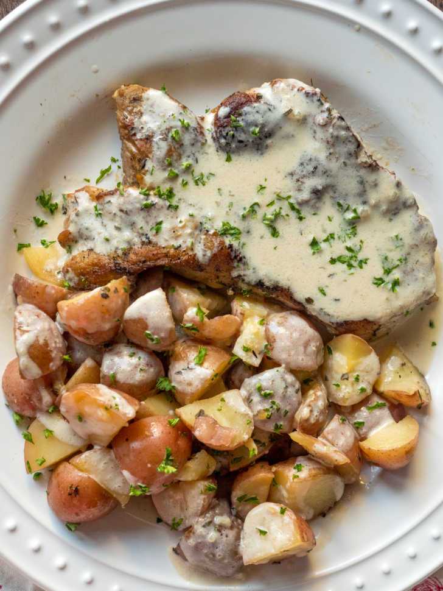
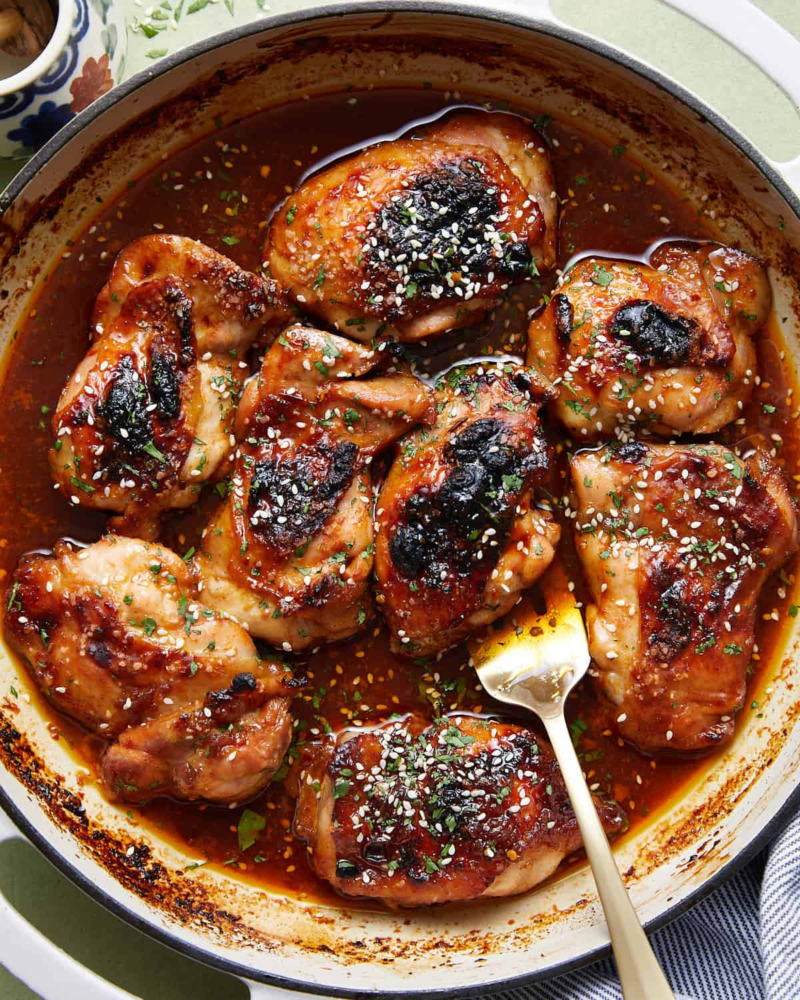
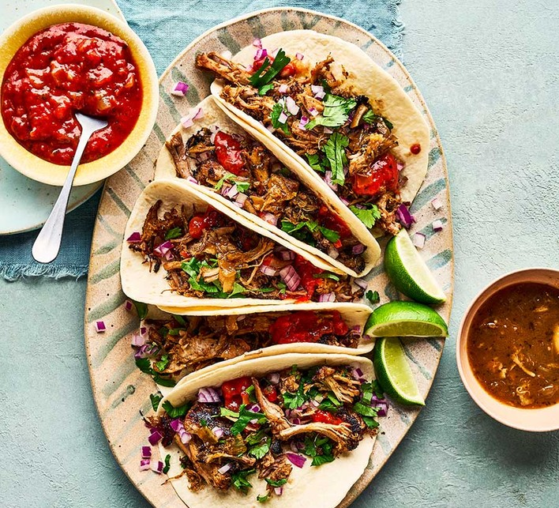

Baked Ziti
Classic Italian-American pasta casserole that is rich, cheesy, and deeply satisfying
0 min
Baked Ziti
Classic Italian-American pasta casserole that is rich, cheesy, and deeply satisfying
Ingredients
- 1 pound dry ziti pasta
- 1 onion, chopped
- 1 pound lean ground beef
- 26 ounce spaghetti sauce
- 6 ounces provolone cheese, sliced
- 1 ½ cups sour cream
- 6 ounces mozzarella cheese, shredded
- 2 tablespoons grated Parmesan cheese
Process (Step-by-step)
- Bring a large pot of lightly salted water to a boil. Add ziti pasta, and cook until al dente, 8 min
- Put brown ground beef and onion in a large skillet over medium heat; stir in spaghetti sauce and simmer 15 min
- Spread 1/2 of the ziti in the bottom of the prepared dish 1 min
- Top with Provolone cheese 1 min
- Top with sour cream 1 min
- Add 1/2 of the meat sauce, remaining ziti, mozzarella cheese, and remaining meat sauce. Top with grated Parmesan cheese 3 min
- Bake in the preheated oven until heated through and cheeses have melted, about 30 minutes 30 min

Beef Bulgogi
Popular Korean dish of thinly sliced, marinated beef that is grilled or stir-fried
0 min
Beef Bulgogi
Popular Korean dish of thinly sliced, marinated beef that is grilled or stir-fried
Ingredients
- 5 tablespoons soy sauce
- 1/4 cup chopped green onion
- 2 ½ tablespoons white sugar
- 2 tablespoons minced garlic
- 2 tablespoons sesame seeds
- 2 tablespoons sesame oil
- ½ teaspoon ground black pepper
- 1 pound flank steak, thinly sliced
Process (Step-by-step)
- Whisk soy sauce, green onion, sugar, garlic, sesame seeds, sesame oil, and pepper together in a bowl. 5 min
- Place flank steak slices in a shallow dish. Pour marinade over top. Cover and refrigerate for at least 1 hour or overnight. 60 min
- Preheat an outdoor grill for high heat, and lightly oil the grate. 5 min
- Quickly grill flank steak slices on the preheated grill until slightly charred and cooked through, 1 to 2 minutes per side. 4 min

Cajun Seafood Pasta
A rich and creamy dish that combines the vibrant, spicy flavors of Cajun cuisine with a variety of seafood
0 min
Cajun Seafood Pasta
A rich and creamy dish that combines the vibrant, spicy flavors of Cajun cuisine with a variety of seafood
Ingredients
- 1 pound dry fettuccine pasta
- 2 cups heavy whipping cream
- 1 cup chopped green onions
- 1 cup chopped parsley
- 1 tablespoon chopped fresh basil
- 1 tablespoon chopped fresh thyme
- 2 teaspoons salt
- 2 teaspoons ground black pepper or to taste
- 1 ½ teaspoons crushed red pepper flakes
- 1 teaspoon ground white pepper
- ½ pound shrimp, peeled and deveined
- ½ pound scallops
- ½ cup shredded Swiss cheese
- ½ cup grated Parmesan cheese
Process (Step-by-step)
- Fill a large pot with lightly salted water and bring to a rolling boil. Cook fettuccine at a boil until tender yet firm to the bite, afterwards drain pasta. 8 min
- pour cream into a large skillet. Cook over medium heat, stirring constantly, until just about boiling. Reduce heat and add green onions, parsley, basil, thyme, salt, black pepper, red pepper flakes, and white pepper. Simmer until thickened 8 min
- Stir in shrimp and scallops. Cook until shrimp is no longer translucent. 2 min
- Serve sauce over pasta. 1 min

Creamy Herbed Pork Chops
Comfort dish featuring, pan-seared pork chops bathed in a cream sauce
0 min
Creamy Herbed Pork Chops
Comfort dish featuring, pan-seared pork chops bathed in a cream sauce
Ingredients
- 4 thick-cut boneless pork chops
- 1 teaspoon Montreal steak seasoning
- 2 ½ tablespoons all-purpose flour
- 1 tablespoon dried basil
- 1 teaspoon instant beef bouillon granules
- 5 tablespoons butter, divided, or as needed
- 1 teaspoon freshly ground black pepper
- 2 cups milk
Process (Step-by-step)
- Season pork chops on all sides with steak seasoning. Mix flour, basil, and bouillon granules together in a small bowl. 5 min
- Melt 2 tablespoons butter in a large skillet over medium heat. Add seasoned chops and cook until browned and only slightly pink in the center, 7 to 10 minutes per side 20 min
- Add remaining butter to the skillet as needed so that about 3 tablespoons pan drippings remain and stir pepper into pan drippings 2 min
- Add flour mixture and cook, stirring constantly, until browned 2 min
- Gradually whisk in milk and bring to a simmer over medium heat; cook, stirring constantly, until thick and bubbly 4 min
Curry Stand Chicken Tikka Masala Sauce
Known for its vibrant orange color and rich, creamy texture
0 min
Curry Stand Chicken Tikka Masala Sauce
Known for its vibrant orange color and rich, creamy texture
Ingredients
- 2 tablespoons ghee
- 1 onion, finely chopped
- 4 cloves garlic, minced
- 1 tablespoon ground cumin
- 1 teaspoon salt
- 1 teaspoon ground ginger
- 1 teaspoon cayenne pepper
- ½ teaspoon ground cinnamon
- ¼ teaspoon ground turmeric
- 14 ounce tomato sauce
- 1 cup heavy whipping cream
- 1 tablespoon white sugar, or more to taste
- 2 teaspoons paprika
- 1 tablespoon vegetable oil
- 4 skinless, boneless chicken breast halves, cut into bite-size pieces
- ½ teaspoon curry powder
Process (Step-by-step)
- Heat ghee in a large skillet over medium heat. Add onion; cook and stir until translucent, about 5 minutes. 5 min
- Stir in garlic; cook and stir just until fragrant, about 1 minute. Stir cumin, 1 teaspoon salt, ginger, cayenne pepper, cinnamon, and turmeric into onion mixture; fry until fragrant, 2 min
- Stir tomato sauce into onion and spice mixture; bring to a boil and reduce heat to low. 3 min
- let the sauce simmer 10 min
- Mix in cream, 1 tablespoon sugar, and paprika. Bring sauce back to a simmer and cook, stirring often, until sauce is thickened 15 min
- Heat vegetable oil in a separate skillet over medium heat. Stir chicken into hot oil; add curry powder. Sear chicken until lightly browned but still pink inside 3 min
- Transfer chicken and any pan juices into sauce. Simmer chicken in sauce until no longer pink 30 min

Four Cheese Margherita Pizza
A cheesy variation on the classic Margherita, combining fresh tomatoes, basil, and mozzarella with the richness of additional cheeses
0 min
Four Cheese Margherita Pizza
A cheesy variation on the classic Margherita, combining fresh tomatoes, basil, and mozzarella with the richness of additional cheeses
Ingredients
- ¼ cup olive oil
- 1 tablespoon minced garlic
- ½ teaspoon sea salt
- 8 tomatoes, sliced
- 2 (12 inch) pre-baked pizza crusts
- 8 ounces shredded Mozzarella cheese
- 4 ounces shredded Fontina cheese
- 10 fresh basil leaves, washed, dried
- ½ cup freshly grated Parmesan cheese
- ½ cup crumbled feta cheese
Process (Step-by-step)
- Stir together olive oil, garlic, and salt; toss with tomatoes, and allow to stand 15 min
- Preheat oven to 400 degrees F 5 min
- Brush each pizza crust with some of the tomato marinade. Sprinkle the pizzas evenly with Mozzarella and Fontina cheeses. Arrange tomatoes overtop, then sprinkle with shredded basil, Parmesan, and feta cheese 3 min
- Bake in preheated oven until the cheese is bubbly and golden brown 10 min

Garlic-Brown Sugar Chicken Thighs
Simple dish featuring tender chicken thighs coated in a sweet, savory, and sticky glaze
0 min
Garlic-Brown Sugar Chicken Thighs
Simple dish featuring tender chicken thighs coated in a sweet, savory, and sticky glaze
Ingredients
- 8 bone-in, skin-on chicken thighs
- 3 tablespoons unsalted butter, divided
- 4 cloves garlic, minced
- ¼ cup packed brown sugar
- 1 tablespoon honey
- ½ teaspoon dried oregano
- ¼ teaspoon dried thyme
- ¼ teaspoon dried basil
- Salt & pepper
Process (Step-by-step)
- Preheat the oven to 400 degrees F 5 min
- Season chicken thighs with salt and pepper. 5 min
- Melt 2 tablespoons butter in a large oven-proof skillet over medium-high heat 2 min
- Add chicken, skin-side down, and sear until just browned 3 min
- Melt remaining 1 tablespoon butter in the skillet, stirring to loosen any browned bits on the bottom 1 min
- Add garlic; cook and stir until fragrant 1 min
- Stir in brown sugar, honey, oregano, thyme, and basil until well combined. Turn off the heat and return chicken to the skillet, skin-side down. 3 min
- Roast in the preheated oven until chicken is no longer pink at the bone and the juices run clear 25 min
- Drizzle pan sauce over chicken thighs when serving. 1 min

Pork Carnitas
A mexican dish that features tender pork with delicious crispy, caramelized edges
0 min
Pork Carnitas
A mexican dish that features tender pork with delicious crispy, caramelized edges
Ingredients
- ¼ cup vegetable oil
- 4 pounds pork shoulder
- 3 tablespoons salt
- 1 onion, chopped
- 1 clove garlic, crushed
- 3 tablespoons lime juice
- 1 tablespoon chili powder
- ½ teaspoon dried oregano
- ½ teaspoon ground cumin
- 58 ounces chicken broth
Process (Step-by-step)
- Heat vegetable oil in a large Dutch oven over high heat. Season pork shoulder pieces with salt, then arrange in the Dutch oven. Cook until browned on all sides 10 min
- Stir in onion, garlic, lime juice, chili powder, oregano, and cumin. Pour in chicken broth; bring to a boil. Reduce heat to medium-low, cover, and simmer until pork is very tender 150 min
- Preheat the oven to 400 degrees F 5 min
- Transfer pork shoulder to a large baking sheet; reserve cooking liquid. Drizzle a small amount of cooking liquid over pork pieces and lightly season with salt. 3 min
- Bake pork in the preheated oven until browned,Drizzle more cooking liquid every 10 minutes 30 min
- Serve hot and enjoy! 1 min

Quick and Easy Paella
A simplified, accessible version of the paella
0 min
Quick and Easy Paella
A simplified, accessible version of the paella
Ingredients
- 1 pound jumbo shrimp, peeled and deveined
- 2 teaspoons olive oil
- ½ teaspoon saffron threads, or more to taste
- 2 ¼ cups chicken broth
- 1 tablespoon olive oil
- 8 ounces chorizo sausage
- ½ yellow onion, diced
- 2 cloves garlic, minced
- 1 ⅓ cups Arborio rice
- ½ cup green peas
- 1 red bell pepper, cut into thin strips
- 1 teaspoon paprika
- 1 pinch cayenne pepper, or more to taste
- Salt
Process (Step-by-step)
- Cook and stir reserved shrimp shells and 2 teaspoons olive oil in a saucepan over medium heat until shells are pink and fragrant 2 min
- Stir saffron into shells; add chicken broth, bring to a simmer, and cook until broth is a rusty brown and fragrant, 20 min
- Strain saffron broth through a fine-mesh sieve; measure out 2 cups of broth, pour into a small saucepan, and place over low heat to keep broth hot. 5 min
- Preheat oven to 425 degrees F 5 min
- Heat 1 tablespoon olive oil in a large, oven-proof skillet over medium heat. Cook chorizo slices in hot oil until browned 2 min
- Add onion to sausage; cook and stir until soft and slightly translucent 3 min
- Stir garlic into chorizo mixture; cook and stir until fragrant 1 min
- Add rice to skillet and stir to coat rice completely in oil; stir in peas. 2 min
- Pat rice mixture evenly into the bottom of the skillet. Arrange shrimp in a single layer over the top of the rice. Lay pepper strips around and in between shrimp; season with salt, paprika, and cayenne pepper. 3 min
- Increase heat to high. When rice begins to sizzle in the skillet, pour reserved 2 cups hot saffron broth over the shrimp; gently shake the skillet to distribute liquid. 5 min
- Bake rice mixture in the preheated oven until rice is almost tender and still a bit wet 20 min
- Place skillet over medium-high and cook until rice is tender, liquid is absorbed, and rice caramelizes and crusts slightly on the bottom of the skillet 5 min

Southern-Style Oven-Fried Catfish
An oven-baked catfish that features tender, flaky catfish fillets coated in a seasoned cornmeal crust.
0 min
Southern-Style Oven-Fried Catfish
An oven-baked catfish that features tender, flaky catfish fillets coated in a seasoned cornmeal crust.
Ingredients
- 3 tablespoons vegetable oil
- 1 ½ pounds catfish fillets, cut into serving pieces
- 1 cup cornmeal
- 2 teaspoons Creole seasoning
- 1 teaspoon paprika
- 1 teaspoon white sugar
- ½ teaspoon ground black pepper
- 2 eggs, lightly beaten
- 1 tablespoon hot pepper sauce or water
Process (Step-by-step)
- Preheat an oven to 425 degrees F 5 min
- Grease a 13x9 glass baking dish with the oil, and set aside. 2 min
- Rinse the catfish fillets, and pat dry 3 min
- In a shallow bowl, combine the cornmeal, creole seasoning, paprika, sugar, and black pepper 2 min
- In another bowl combine the eggs and hot sauce or water 2 min
- Dip the fillets in the egg mixture, dredge in the cornmeal mixture, and arrange in the baking pan. 2 min
- Bake for until cooked through and golden brown. Turn once during cooking 15 min
- Place catfish on a paper-towel lined plate, and serve immediately with additional hot sauce. 1 min